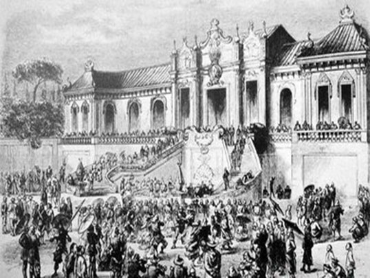
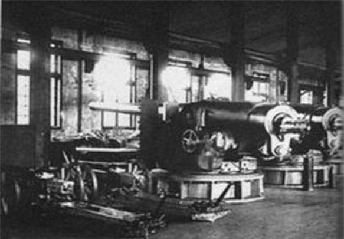
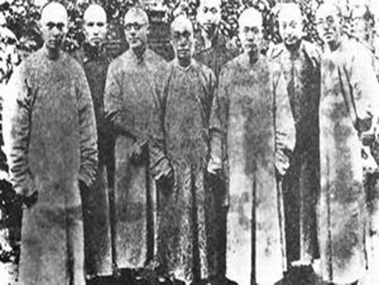
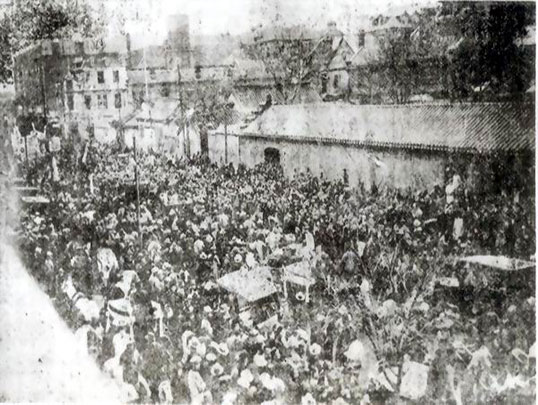

千年局变
-
 第一次鸦片战争
第一次鸦片战争 -
 甲午中日战争
甲午中日战争 -
英法联军火烧圆明园
-
 八国联军侵华
八国联军侵华 -
洋务运动
-
戊戌变法
-
辛亥革命
帝国主义侵略扩张
第一次鸦片战争
1840年6月28日－1842年8月，即清朝道光二十年至二十二年,英国向满清走私鸦片从而引发战争，战争的导火线是英国商人在中国广东海域走私鸦片二十多年不止日盛，林则徐于1839年在广东强行销烟，中英矛盾逐次升级，而战争以中国失败并赔款割地告终。由此签署的《南京条约》是近代中国的第一个不平等条约，除赔款外，将香港岛永久让予英国，并使英国得到领事裁判权。自此，中国社会一步步沦为半殖民地半封建社会。
第二次鸦片战争
1856年-1860年。英国与法国为了进一步打开中国市场，扩大在华侵略利益、趁中国太平天国运动之际，以亚罗号事件及马神甫事件为借口，联手进攻清朝政府的战争。1860年，英法联军攻入了北京，清帝逃往承德，英法联军闯入圆明园并掠夺珠宝、将其焚毁。战争中沙俄出兵后以"调停有功"自居，并胁迫清政府割让150多万平方公里的领土，从而成为最大的赢家。战争以清政府被迫签订《北京条约》结束。第二次鸦片战争迫使清政府先后签订《天津条约》和《北京条约》中俄《瑷珲条约》等和约，列强侵略更加深入。中国因此而丧失了东北及西北共150多万平方公里的领土，战争结束后清政府得以集中力量镇压了太平天国，维持统治。
甲午中日战争
1894年，明治维新的日本开始走上资本主义道路，对外积极侵略扩张，确定了以中国为中心的"大陆政策";此时的清朝是一个通过洋务运动回光返照的帝国，政治腐败，人民生活困苦，官场中各派系明争暗斗、尔虞我诈，国防军事外强中干，纪律松弛;世界主要资本主义国家逐步向帝国主义过渡，日本的侵略行径在一定程度上得到西方列强的支持。1894年(光绪二十年)7月25日丰岛海战爆发，甲午战争开始，由于日本蓄谋已久，而清朝仓皇迎战，这场战争以中国战败、北洋水师全军覆没告终。中国清朝政府迫于日本军国主义的军事压力，1895年4月17日签订了《马关条约》。甲午战争的结果给中华民族带来空前严重的民族危机，大大加深了中国社会半殖民地化的程度
八国联军侵华
1900年春，义和团运动成为了八国联军侵华战争的导火索，以此为借口，八国联军以镇压义和团之名行瓜分和掠夺中国之实。1900年，8月14日，北京城彻底沦陷，八国联军所到之处，杀人放火、奸淫抢掠!从紫禁城、中南海、颐和园中偷窃和抢掠的珍宝更是不计其数!其中著名的万园之园"圆明园"继英法联军之后再遭劫掠，终成废墟。八国联军总司令瓦德西在后来也承认，"所有中国此次所受毁损及抢劫之损失，其详数"。1901年，9月7日，以《辛丑条约》的签订为结果，中国自此彻底沦为半殖民地半封建社会，给当时的国家和人民带来了空前沉痛的灾难。
中国社会各阶层救国图强的各种探索
师夷之长以制夷
第一次鸦片战争后，林则徐自己搜集编成的《四洲志》等外国资料交给魏源，希望他能编撰成书，唤醒国人了解世界。一年之后，第一部系统介绍世界的中文著作《海国图志》完成了，写出了第一代“睁眼看世界的中国人”对国家前途的思考。
洋务运动
19世纪60到90年代晚清洋务派所进行的一场引进西方军事装备、机器生产和科学技术以维护清朝统治的自救运动,前期口号为"自强"，后期口号为"求富"。洋务运动进行30多年虽然没有使中国富强起来，但洋务运动引进了西方先进的科学技术，使中国出现了第一批近代企业，在客观上为中国民族资本主义的产生和发展起到了促进作用。
戊戌变法
甲午中日战争之后,以康有为、梁启超为代表的维新派人士通过光绪帝进行倡导学习西方，提倡科学文化，改革政治、教育制度，发展农、工、商业等的资产阶级改良运动。戊戌变法是一次具有爱国救亡意义的变法维新运动，是中国近代史上一次重要的政治改革，也是一次思想启蒙运动，促进了思想解放，对社会进步和思想文化的发展，促进中国近代社会的进步起了重要推动作用。
辛亥革命
公元1911年至1912年初，旨在推翻清朝专制帝制、建立共和政体的全国性革命。辛亥革命是近代中国比较完全意义上的民族民主革命。它在政治上、思想上给中国人民带来了不可低估的解放作用。辛亥革命开创了完全意义上的近代民族民主革命，推翻了统治中国几千年的君主专制制度，建立起共和政体，结束君主专制制度。传播了民主共和理念，极大推动了中华民族思想解放，以巨大的震撼力和影响力推动了中国社会变革。
© Copyright 2018 by Guangxi University La Cheerleading. All Rights Reserved.